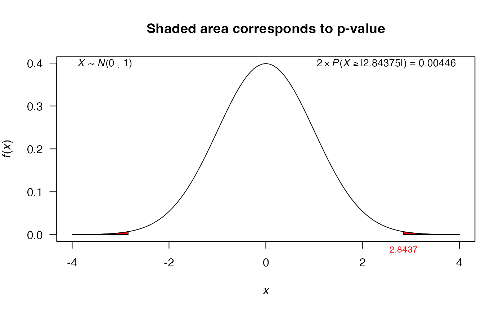

Mean test using values
z_test.RdThis function performs the mean test using summarized data (values).
z_test(meanx, nx, sigma2 = NULL, alternative = "two.sided", mu = 0, conf.level = 0.95)
Arguments
| meanx | sample mean for sample x. |
|---|---|
| nx | sample size for sample x. |
| sigma2 | population variance which is known. |
| alternative | a character string specifying the alternative
hypothesis, must be one of |
| mu | the hypothesized number in the null hypothesis. |
| conf.level | confidence level of the interval, by default its value is 0.95. |
Value
A list with class htest containing the following
components:
the value of the statistic.
the p-value for the test.
a confidence interval for the variance.
the estimated mean.
the specified hypothesized value for alternative hypothesis.
a character string describing the alternative hypothesis.
a character string indicating the type of test performed.
a character string giving the name of the data.
Examples
# Example 13.1 from Freund et al. (2000) res1 <- z_test(meanx=8.091, nx=25, mu=8, sigma2=0.16^2, alternative='two.sided') res1#> #> Z test for mean #> #> data: x #> Z = 2.8437, p-value = 0.004459 #> alternative hypothesis: true is not equal to 8 #> 95 percent confidence interval: #> 8.028281 8.153719 #> sample estimates: #> mean of x #> 8.091 #>plot(res1)# Example 13.2 from Freund et al. (2000) res2 <- z_test(meanx=21819, nx=100, mu=22000, sigma2=1295^2, alternative='less') res2#> #> Z test for mean #> #> data: x #> Z = -1.3977, p-value = 0.0811 #> alternative hypothesis: true is less than 22000 #> 95 percent confidence interval: #> -Inf 22032.01 #> sample estimates: #> mean of x #> 21819 #>plot(res2)